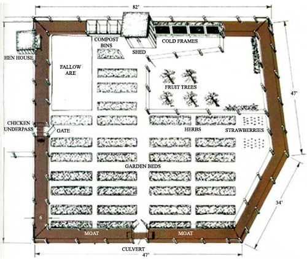
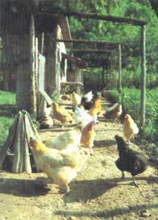
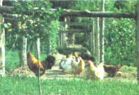

A chicken moat is not a waterway, but it does provide a protective enclosure for the garden. Weeds, insects, rabbits, ground hogs and even deer are barred from entry by the double wall of fencing and the ever-dilingent patrol flock. All in all, it’s a clever solution to the fowl raiser’s dilemma of whether to fence the birds or the garden: Fence both!
In days gone by, rulers of kingdoms would protect themselves by ordering a few thousand serfs to build a moat around the family castle. With the current shortage of serfs, the practice has fallen out of favor. However, when faced with that classic country conundrum, "Do I fence the garden or the chickens?" I decided to make a modern adaptation of that medieval practice. I fenced both fowl and crops-with a chicken moat.
My moat is simply a strip of dry land, enclosed by two parallel fences, which surrounds my family's garden. Throughout the day, the hen patrol moves all around the garden (but never in it), munching on all those things hens love: weeds, seeds, worms, tiny pieces of stones and (best of all) bugs.
The chicken moat provides a clean edge around the garden, keeping down the migration of unwanted grasses, weeds and insects into our plot. (Two years ago, when our neighbor's garden was nearly devastated by grasshoppers, our hens gorged themselves on the invading horde and saved our plot.) The double line of defense discourages most possums, ground hogs and rabbits from trying to harvest free vegetables. Deer can easily clear a single tall fence, but they can't find enough room in the six-foot-wide moat to gather themselves for a second leap. And we've quit losing hens to hawks since the moat was constructed-those raptors avoid the potential entrapment of two fences so close together.
If you wish to construct a moat yourself, I offer the following suggestions:
Do a thorough site inspection and plenty of pencil-and-paper planning first.
Make sure you can get into the moat (with a stepladder or extra gate) for needed maintenance.
So there it is. Want to be king or queen of all (the garden) you survey? Build a chicken moat!
|
 ILLUSTRATION BY DON OSBY Let chickens take over your garden pest control efforts with this innovative "chicken moat." |
 PHOTOGRAPHS BY GENE GERUE The hens patrol around the garden on the lookout for weeds, seeds, worms, tiny pieces of stones and (best of all) bugs. |
 Garden pests are stopped by the chicken buffer on their way to destroy your fresh veggies. |